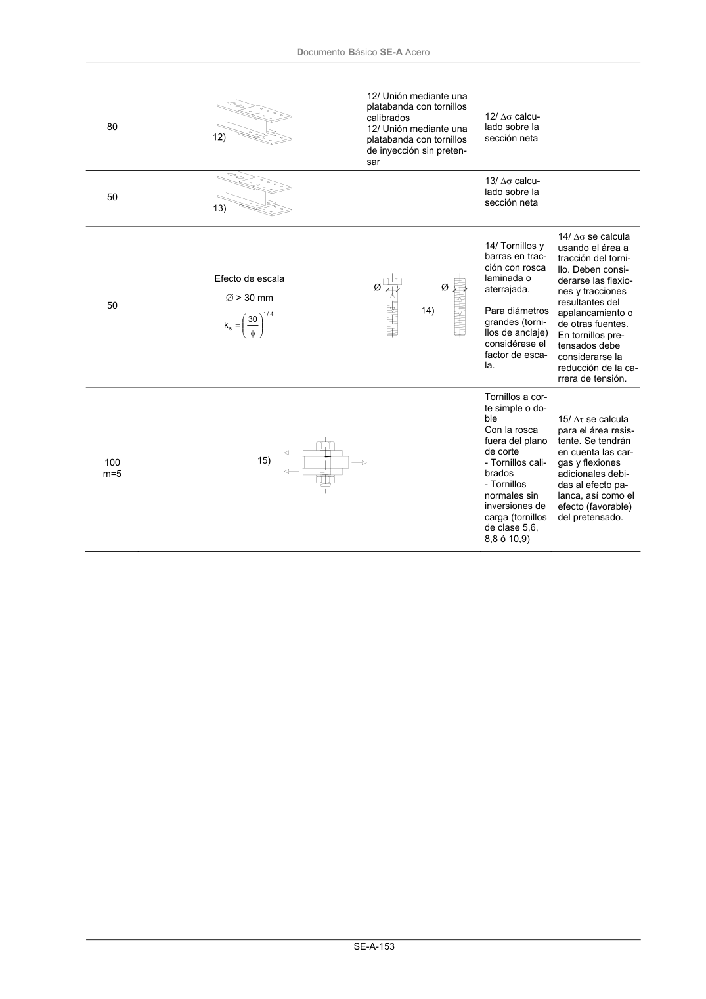

DB-SE-A Acero · edición 2007-10-23 · capa oficial
Documento DB-SE-A-oficial · SHA-256 del PDF 9ed9ea694aabfbda3bfbbef40dfe9223fde05d13c35bc2ba9751e5a96a22a64f
Página física 155 de 168.
Copia fiel del PDF fuente · Fuente oficial
Ficha de la disposición en la fuente oficial
Formato: Texto de la página (Markdown)
Documento Básico SE-A Acero SE-A-153 80 12/ Unión mediante una platabanda con tornillos calibrados 12/ Unión mediante una platabanda con tornillos de inyección sin preten- sar 12/ ∆σ calcu- lado sobre la sección neta 50 13/ ∆σ calcu- lado sobre la sección neta 50 Efecto de escala ∅ > 30 mm 4 / 1 s 30 k φ = 14/ Tornillos y barras en trac- ción con rosca laminada o aterrajada. Para diámetros grandes (torni- llos de anclaje) considérese el factor de esca- la. 14/ ∆σ se calcula usando el área a tracción del torni- llo. Deben consi- derarse las flexio- nes y tracciones resultantes del apalancamiento o de otras fuentes. En tornillos pre- tensados debe considerarse la reducción de la ca- rrera de tensión. 100 m=5 Tornillos a cor- te simple o do- ble Con la rosca fuera del plano de corte - Tornillos cali- brados - Tornillos normales sin inversiones de carga (tornillos de clase 5,6, 8,8 ó 10,9) 15/ ∆τ se calcula para el área resis- tente. Se tendrán en cuenta las car- gas y flexiones adicionales debi- das al efecto pa- lanca, así como el efecto (favorable) del pretensado.
